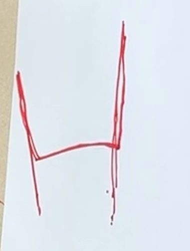

AME 40551 INTRODUCTION TO ROBOTICS · NOTRE DAME · FALL 2025
A Robot Arm That Writes
We measured and modeled a 5-DOF Braccio robot arm, then used inverse kinematics to make it write “HI” with a marker.
TEAM2 students
HARDWAREArduino Braccio arm
TOOLSMATLAB · Arduino (C++)
METHODProduct of Exponentials · inverse kinematics
KEY RESULTS
Hwritten cleanly from IK-computed angles
5-DOFarm modeled from my own measurements
2 lettersprogrammed from via points with inverse kinematics
The camera faces the paper from the side, so the letters appear rotated.
From measurements to motion
- Model the robotDefined base and end-effector frames and a zero configuration, mapped each servo command to its joint angle, set joint limits, and measured link lengths to write the screw axes.
- Check forward kinematicsComputed the end-effector pose in MATLAB with both the space and body forms of the Product of Exponentials, then commanded the physical arm to the same joint angles and compared.
- Solve inverse kinematicsPicked key points along each letter and solved for the joint angles to reach each one with a geometric IK solution in MATLAB.
- Run and refineSent the angles to the arm through an Arduino sketch. Wherever a stroke came out wrong, we added another point and ran it again.
Results
The H came out clean: three strokes with the pen lifting in between. The I was harder than expected. Its long single stroke bent, so it reads closer to a V. Seeing the math meet real hardware was the best part, since equations that are correct on paper still have to deal with servo play and too few via points.
Next time, I would interpolate between via points and compute the inverse kinematics on the Arduino itself, so strokes stay straighter and new letters only need new points.

% Geometric inverse kinematics for the Braccio arm (MATLAB) function [t1,t2,t3,t4] = invKin(r, t, h, phi) L1=2.75; L2=7.75-2.75; L3=12.5-7.75; L4=15-12.5; % link lengths, in x = r*cos(t); y = r*sin(t); z = h; rb = r - L4*sin(phi); % wrist center zb = z - L1 - L4*cos(phi); t1 = atan2(y,x); % base beta = acos((L2^2+L3^2-rb^2-zb^2)/(2*L2*L3)); % law of cosines t3 = pi - beta; % elbow alpha = acos((L2^2-L3^2+rb^2+zb^2)/(2*L2*sqrt(rb^2+zb^2))); t2 = pi/2 - alpha - atan2(zb,rb); % shoulder t4 = -(phi - t2 - t3); % wrist end